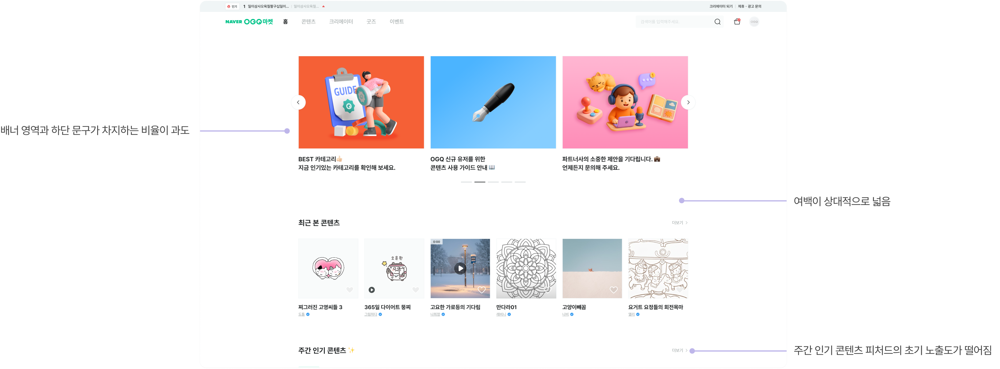
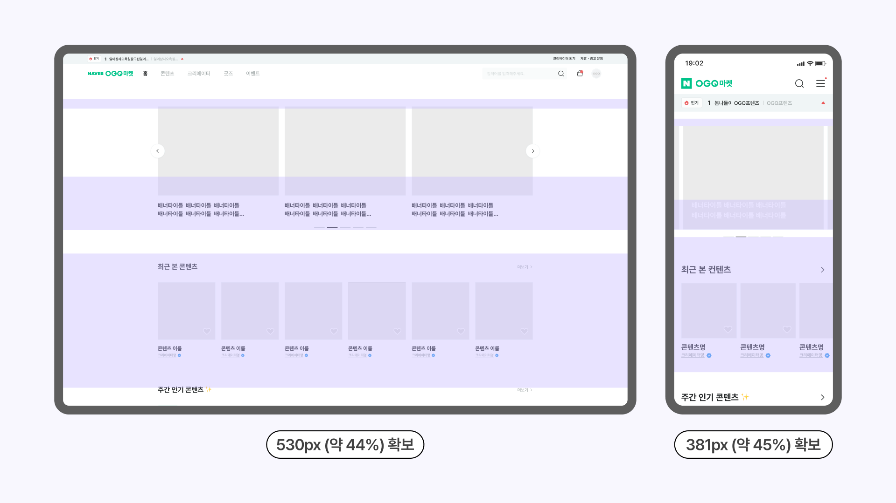

SUS 결과는 현재 프로토타입이 수용 가능한 사용성 수준에 도달했음을 보여줍니다. 특히 자신감(Q9)과 학습 용이성(Q10)에서 높은 점수를 기록했으며, 복잡성(Q2)과 지속 사용 의향(Q1) 항목이 최종 이터레이션의 핵심 개선 방향이 됐습니다.
상세 데이터 보기 — SUS 10문항▼
Q1 자주 사용하고 싶다2.88
Q2 복잡하게 느껴진다2.63
Q3 쉽게 사용할 수 있다3.63
Q4 전문가 도움 없이 사용 가능1.6
Q5 기능이 잘 통합되어 있다3.5
Q6 일관성이 없다1.75
Q7 빠르게 배울 수 있다3.75
Q8 사용이 불편하다2.38
Q9 자신감이 생겼다4.1
Q10 학습 전 알아야 할 것이 많다2.0
Affinity Mapping
사용자 피드백 구조화
8명의 인터뷰와 태스크 테스트에서 수집된 발화 데이터를 어피니티 매핑으로 구조화했습니다. 유사한 패턴끼리 그룹핑해 주요 Pain Point와 사용자 니즈를 범주화했습니다.
Affinity Diagram — Grouping 8 participants feedback into themes
Key Insights
리서치에서 발견한 것들
🔍
Insight #1
스티커 제거 방식이 직관적이지 않아 포기로 이어짐 X버튼을 찾지 못하거나 찾아도 드래그까지 해야 해서 그냥 넘기게 됨. 제거 인터랙션 자체를 단순화해야 함.
⚠️
Insight #2
스티커 클릭 루트가 예측 불가능해 신뢰가 무너짐 "제휴사" 버튼의 의미를 이해한 참가자가 없었고, 스티커 클릭 시 바로 외부로 넘어가는 구조가 불안감을 만듦. 바텀시트를 기본 경로로 설계해야 함.
✨
Insight #3
제품과 영상의 맥락이 연결될수록 신뢰도와 구매 욕구가 높아짐 태그된 제품 칩과 타임스탬프에 강한 긍정 반응. 사용자는 제품이 영상의 어느 장면에서 나왔는지 알고 싶어하며, 이 연결이 있을 때 신뢰와 관심이 높아짐.
UT Result
UT 결과 반영
01.스티커 제거 방식 변경▼
초기 디자인에서는 스티커를 꾹 누른 후 우측으로 드래그하면 삭제되는 방식이었으나 UT에서 불편하다는 반응이 다수였습니다. YouTube에서 이미 익숙한 더보기(⋮) 아이콘 방식을 채택해, 누르면 바텀시트가 올라오며 "닫기"를 선택할 수 있도록 수정했습니다.
02.스티커 이동 기능 툴팁 추가▼
기존에는 스티커 이동 기능이 직관적으로 드러나지 않아 사용자가 기능 자체를 인지하지 못했습니다. UT 결과를 반영해 기능 출시 초반 이동 가이드가 노출되도록 툴팁을 추가했습니다.
03.제품 관련 영상 탐색 플로우 추가▼
바텀시트에서 제품을 확인한 후 해당 제품과 관련된 다른 Shorts나 Videos를 바로 탐색할 수 있는 플로우가 없었습니다. Related Videos 버튼을 추가해 누르면 해당 제품과 관련된 영상 목록 페이지로 이동하도록 시청 경험을 연결성 있도록 설계했습니다.
04.스티커 클릭 시 바텀시트 열리게 구조 변경▼
기존에는 "Affiliate(제휴사)" 버튼을 눌러야 바텀시트가 열렸고, 스티커 자체를 클릭하면 바로 외부 사이트로 이동하는 구조였습니다. UT에서 대다수의 참가자가 이 구조를 예측하지 못했고 불안감을 만든다는 걸 확인했습니다. "Affiliate(제휴사)" 버튼을 없애고 스티커 클릭 시 바텀시트가 바로 올라오도록 구조를 변경했습니다.
05.제품 공유 기능 추가▼
저장한 제품을 다른 사람에게 공유하는 경로가 없었습니다. 리서치를 통해 공유 니즈가 확인되어 Products 폴더 내 더보기(⋮) 아이콘 클릭 시 Share(공유) 버튼을 추가하여, 링크 복사·외부 앱으로 공유할 수 있도록 설계했습니다.
Design Solution
최종 디자인
Final Hi-fi Prototype — Interactive flow
Final Hi-fi Design — Task flows
Reflection
배운 것과 다음에 할 것
배운 점
리서치가 실제로 설계 결정을 바꾸는 장면을 직접 경험했습니다. 스티커 dismiss 방식이 드래그에서 ⋮ 메뉴로 바뀐 것, 바텀시트가 기본 진입 경로로 변경된 것 모두 UT 데이터 없이는 내리기 어려운 결정이었습니다. 리서치가 디자인의 방향을 바꿀 수 있다는 걸 수치와 행동 데이터로 확인한 프로젝트였습니다.
프로토콜 개선
UT 진행 중 일부 질문이 사용자의 행동을 유도하고 있다는 것을 발견하고 즉시 표현을 수정했습니다. 이 경험을 바탕으로 이후 프로젝트에서는 프로토콜 검토 단계에 '유도 여부 체크' 항목을 추가해 인터뷰 전 팀 내 리뷰를 거치는 방식으로 프로세스를 구체화했습니다.
향후 개선 방향
전 과정을 폭넓게 다루다 보니 특정 포인트를 더 깊이 파고드는 데 한계가 있었습니다. 다음에는 리마인드 기능이나 Shorts 썸네일에서 제품 스티커 유무를 미리 확인할 수 있는 기능 등 더 고도화된 경험까지 설계해보고 싶습니다.
아쉬운 점
프로젝트 진행 당시 제품 스티커 기능이 한국에 출시된 지 얼마 되지 않은 시점이라 기능을 인지하고 있는 참가자를 모집하는 것 자체가 쉽지 않았습니다. 지금 시점이었다면 기능에 더 익숙한 사용자들로부터 더 풍부한 인사이트를 얻을 수 있었을 것 같습니다.
Next Case
NOM · Product Design · 2026
Naver OGQ Market 홈 상단부 공간 효율화
Read case study →
NOM · Naver OGQ Market · 2026
Naver OGQ Market 홈 상단부 공간 효율화피처드 콘텐츠 발견성을 높여 유료 구매율 하락세를 완화하다
Product DesignData Analysis · GA4UI OptimizationHypothesis-drivenBefore / After Validation
Team: 2명 Designer + Developer
My Role: UX Research, UI Design, Validation
+60.9%
최근 본 콘텐츠 클릭당 전환율
+45%
주간인기 지면 매출 (절대값)
~45%
홈 상단 공간 확보
Role
Product Designer — 문제 정의 · UI 설계 · 데이터 검증
Context
현재 재직 중인 서비스 · 실무 프로젝트
Period
개편 2026.5 · 검증 4–5월
Background
왜 시작했나
OGQ Market의 유료 구매율이 2024년 2월 45.7%에서 2026년 4월 42.0%까지 지속 하락하고 있었습니다. 홈 화면 상단부가 과도한 공간을 차지해 유료 피처드 콘텐츠의 초기 노출도가 떨어지고 있다는 가설을 세웠습니다.
유료 구매율 추이
45.7% →42.0%
2024.2 → 2026.4 · 지속 하락
상단부 점유
배너 · 여백 · 최근 본
피처드 영역 도달에 추가 스크롤 필요
결과
발견성 ↓
유료 콘텐츠 발견 기회 상실

📐
과도한 상단 점유
배너, 여백, '최근 본 콘텐츠' 영역이 첫 화면의 절반 가까이를 차지했어요.
🔍
피처드 도달까지 스크롤
유료 피처드 영역에 닿으려면 사용자가 추가로 스크롤해야 했어요.
📉
발견 기회 상실
초기 노출도가 낮아 유료 콘텐츠가 발견될 기회 자체가 줄었어요.
Hypothesis
검증 가능한 가설로 정리
“상단부를 효율화해 피처드 콘텐츠의 초기 노출도를 높이고, '최근 본 콘텐츠'를 사이드바로 이동시키면 —
① 최근 본 콘텐츠 경로의 클릭당 전환율이 개선되고, ② 주간인기 지면의 매출 기여도가 증가하여, 결과적으로 유료 구매율 하락세가 완화될 것이다.”
Solution
상단부를 다시 설계하다
PC·모바일 모두에서 화면 높이의 약 44~45% 공간을 확보했습니다. 핵심은 배너 축소와 '최근 본 콘텐츠'의 사이드바 이동입니다.

← Click to compare
← Click to compare
PC1200px 기준
-530px ≈ 44%
배너 축소304 → 232px -72
최근 본 콘텐츠 → 사이드바458px -458
Mobile844px 기준
-381px ≈ 45%
배너 축소253 → 194px -59
GNB 여백 조정32 → 16px -16
최근 본 콘텐츠 → 사이드바306px -306
변경 상세
배너
타이틀 오버레이 통일, 한 줄 형식으로 최적화
최근 본 콘텐츠
썸네일+타이틀 스크롤 형태로 사이드바 이동
Row-gap
64→48px (PC) / 40→24px (MO)
Validation
두 개의 독립 지표로 검증
개선 전(2026.4.15–4.27)과 개선 후(2026.5.8–5.20) 각 13일치를 비교 분석했습니다. 서로 독립적인 두 지표를 추적해 효과가 우연이 아닌지 교차 검증했습니다.
▲+60.9%
최근 본 콘텐츠 — 클릭당 전환율
6.4%10.3%
▲+45%
주간인기 지면 — 매출 절대값
114만166만
4-1 · 최근 본 콘텐츠 경로 — 클릭당 전환율
GA4 checkout_source: recent_artwork 로 구매 경로를 분리해 추적했습니다.
클릭당 전환율
+60.9%
6.4% → 10.3%
결제 진입율
+57.7%
9.7% → 15.3%
일평균 구매
-0.9건
손실폭 3주 연속 수렴 중
상세 데이터 보기 — 클릭 · 진입 · 전환▼
지표
개선 전
개선 후
변화
클릭 수
1,632
895
▼ 45.2%
결제 진입율
9.7%
15.3%
▲ 57.7%
클릭당 전환율
6.4%
10.3%
▲ 60.9%
일평균 구매
8건
7.1건
▼ 0.9건
절대 클릭은 줄었지만 클릭당 전환율은 60.9% 상승 — 사이드바에서 찾아 클릭하는 사용자는 구매 의도가 높은 세그먼트. 일평균 손실폭도 2.5건 → 1.25건 → 0.9건으로 3주 연속 수렴 중.
4-2 · 주간인기 지면 — 매출 기여 비중
홈 주간인기 지면 노출 스티커의 매출을 합산해 추적했습니다.
지면 매출 비중
6.9% → 11.0%
상대 +49%
지면 매출 절대값
+45%
1,141,600 → 1,657,000
전체 매출
반등 조짐
W21부터 회복 신호
상세 데이터 보기 — 주차별 매출 비중▼
주차
전체 매출
지면 매출
지면 비중
개편 전 5주 평균 (W14–18)
16.5M
1,141,600
6.9%
W19 (개편 주)
14,793,500
1,314,000
8.88%
W20
14,855,500
1,446,000
9.73%
W21
15,057,000
1,657,000
11.0%
전체 매출이 하락하는 국면에서도 지면 매출 절대값은 +45% 증가 — 비중 상승이 단순 착시가 아님을 확인. featured +47%, weekly_popular +25% 둘 다 기여.
Insights
종합 인사이트
🔁
Insight #1
서로 독립적인 두 지표가 같은 방향을 가리킴 클릭당 전환율과 지면 매출 기여도를 따로 추적했는데 둘 다 개선됨. 상단부 효율화의 효과가 우연이 아님을 교차 검증할 수 있었음.
📈
Insight #2
절대 클릭은 줄었지만 클릭당 전환율은 +60.9% 상승 6.4% → 10.3%. 사이드바에서 직접 찾아 클릭하는 사용자는 구매 의도가 높은 세그먼트였음.
💰
Insight #3
전체 매출 하락 속에서도 피처드 지면 매출은 실질 증가 지면 매출 절대값 +45%(114만 → 166만원), 전체 대비 비중도 6.9% → 11.0%로 상승. 비중 상승이 단순 착시가 아님을 확인.
Conclusion
최종 결론 — 개선 UI 유지
PC 530px(≈44%), 모바일 381px(≈45%)의 상단 공간을 확보하고, 두 개의 독립 지표로 효과를 교차 검증했습니다. 전체 매출이 하락하는 국면에서도 피처드 지면 매출은 실질적으로 증가했기에, 개선된 UI를 유지하기로 결정했습니다.
정량 검증 결과를 근거로 개선안을 사내 디자인 시스템에 반영했습니다. 변경된 배너 규격을 공식 컴포넌트 가이드로 표준화해 크리에이터 팀에 배포함으로써, 일회성 개선에 그치지 않고 조직 전반에 일관되게 적용되도록 했습니다.
PC
Mobile
Reflection
한계와 다음 단계
알고 있는 한계
데이터 기간
주간인기 지면 데이터가 W20–W21 2주뿐이라 아직 예비 분석 수준입니다.
간접 지표
지면 매출은 간접 지표로, 홈을 보고 직접 구매했다는 인과 증거는 아닙니다.
측정 도구
Clarity를 개편 전 미설치해 스크롤 깊이·클릭 히트맵의 전후 비교가 불가했습니다.
비교 조건
전후 13일치 비교라 요일 구성 차이에 따른 영향을 배제하기 어렵습니다.
다음에 할 것
데이터 누적 후 재분석
주간인기 지면 데이터(현재 2주)를 더 쌓아 신뢰도 보강
타 피처드 영역 비교
블로그 인기·카테고리별 추천 등 효율 비교 분석
Clarity 사전 설치
다음 개편 전 설치해 전후 UX 지표 직접 비교
Next Case
YouTube Redesign Challenge · 2025
YouTube Shorts Shopping Experience Redesign
Read case study →
About
I find the why then design.
Starting from graphic and content design, I became drawn to how visual output shapes user behavior. That curiosity — wanting to make decisions based on data rather than instinct — is what led me to product design.
그래픽 디자인을 시작으로 콘텐츠 디자인, 웹 디자인을 거쳐 현재는 UX/UI 디자인 업무를 수행하고 있습니다. OGQ에서 7년간 콘텐츠 디자이너로 근무하며 NAVER, 삼성, SOOP 등 다양한 파트너사와 협업 프로젝트를 진행했고, 웹·모바일 이벤트 페이지, 배너, 그래픽 아이콘, 일러스트레이션, 캐릭터 디자인 등 폭넓은 디자인 경험을 쌓았습니다.
NAVER OGQ마켓·SOOP·Grafolio 등 다수의 서비스에서 배너와 이벤트 페이지가 실제 유저 반응으로 이어지는 과정을 경험하며, 시각적 결과물이 사용자 행동에 미치는 영향에 주목하게 되었습니다. 동시에 단발성 산출물이 아닌, 사용자가 서비스를 어떻게 경험하는지 흐름 전체를 설계하고 싶다는 생각이 커졌습니다. '왜 이 배너는 반응이 오고 저건 안 올까?'라는 질문이 결국 사용자 행동의 근본 원인을 탐구하는 UX 리서치로 이어졌고, 데이터와 수치에 기반해 디자인 결정을 내리는 프로덕트 디자이너로 전환하게 되었습니다.
현재는 디자인 시스템을 기반으로 UI 일관성을 관리하고 신규 컴포넌트를 설계하며, 서비스 화면 개선 업무를 수행하고 있습니다. 또한 NAVER OGQ 마켓과 채팅플러스 관련 프로젝트를 진행하며 사용자 흐름과 사용성을 고려한 화면 설계 경험을 쌓고 있습니다. 직군 전환 이후에는 기획자·개발자와의 협업을 통해 의사결정 과정에도 참여하며 서비스 관점의 사고를 넓혀가고 있습니다.